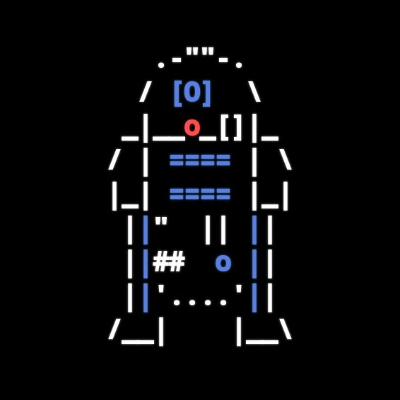

Metti alla prova le tue conoscenze di teoria relazionale, SQL e algebra relazionale.
Esercizi e allenamenti personalizzati. Traccia i tuoi progressi e migliora ogni giorno.
Sessioni di focus con timer a schermo intero, pausa occhi 20-20-20 e notifiche audio.